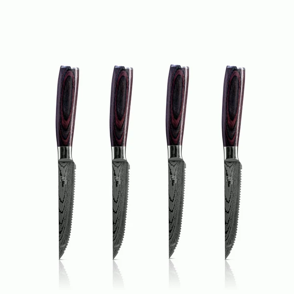
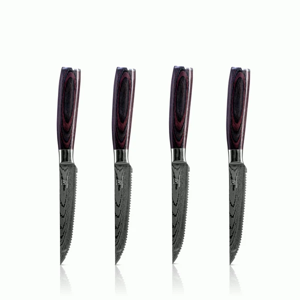

Table of contents
- Welche Unterschiede gibt es zwischen glatten und gezahnten Steakmessern?
- Welche Vorteile bieten Steakmesser mit Wellenschliff?
- Wie pflegt man Steakmesser richtig?
 

Welche Unterschiede gibt es zwischen glatten und gezahnten Steakmessern?
Steakmesser sind ein wesentlicher Bestandteil der Küchenequipment und die Wahl des richtigen Steakmessers ist entscheidend, um das beste Ergebnis beim Schneiden von Fleisch zu erzielen. Doch welche Unterschiede gibt es zwischen glatten und gezahnten Steakmessern? Dieser Artikel erklärt die Unterschiede und betrachtet die Vor- und Nachteile jeder Sorte.
Glatte Messer
Ein glattes Steakmesser hat eine flache, reibungslose Klinge ohne Zähne. Dieser Messertyp ist ideal zum Schneiden von Fleischstücken mit weichem Gewebe wie Rinderfilet oder Lammkoteletts. Glatte Messer sind besonders gut für das Schneiden von feinen Scheiben geeignet, da der Kontakt zwischen Klinge und Fleisch stets gleichmäßig ist und die Möglichkeit besteht, feine Schnitte zu machen. Allerdings sind glatte Messer nicht sehr effizient, wenn es darum geht, dickere Fleischstücke zu schneiden.
Gezahnte Messer
Gezahnte Steakmesser haben eine Klinge mit Zähnen und sind ideal für die Zubereitung von dickwandigem Fleisch, wie Rinderhüfte oder Lammkeule. Aufgrund der Zähne ist es möglich, dickere Scheiben zu schneiden und das Messer gleitet leicht durch das Fleisch. Allerdings sind gezahnte Messer weniger effizient beim Schneiden von weichem Fleisch. Bei zu viel Druck kann die Klinge das Gewebe sehr leicht beschädigen und die Schneide ist schwierig zu kontrollieren.
Vor- und Nachteile
Glatte Steakmesser sind flexibler und eignen sich hervorragend für das Schneiden feiner Scheiben von weichem Fleisch. Gezahnte Messer hingegen sind effizienter beim Schneiden von dickwandigem Fleisch und ermöglichen es, dickere Scheiben zu schneiden. Letztendlich ist die Wahl des richtigen Messers abhängig von dem jeweiligen Gericht und der Art des Fleisches. Beide Arten haben ihre Vor- und Nachteile, sodass es letztendlich auf den Geschmack und die Vorlieben des Kochenden ankommt. Wer sich nicht entscheiden kann, kann ein Messer mit beiden Arten von Klingen erwerben - eine glatte Seite zum Schneiden weicher Stücke und eine gezahnte Seite für das Schneiden von Hartfleisch.
Fazit
Unterschiede zwischen glatten und gezahnten Steakmessern gibt es vor allem in Bezug auf die Art des Fleisches, das geschnitten wird. Glatte Messer sind ideal für das Schneiden feiner Scheiben von weichem Fleisch, während gezahnte Messer besser geeignet sind für das Schneiden von dickwandigem Fleisch. Am besten ist es, beide Arten von Messern zur Hand zu haben, um flexibel auf verschiedene Situationen reagieren zu können. Mit der richtigen Wahl des Steakmesser lässt sich das Kocherlebnis deutlich verbessern und jedes
Welche Vorteile bieten Steakmesser mit Wellenschliff?
Wenn Sie nach einem Steakmesser mit Wellenschliff suchen, sind die Vorteile zahlreich. Diese Messer bieten mehr als nur ein optisches Erlebnis und sorgen für eine präzise Schneidleistung bei jeder Mahlzeit. Ein Steakmesser mit Wellenschliff ist eine großartige Investition für Ihre Küche, da es einerseits dazu beiträgt, dass Ihr Essen gut aussieht und andererseits auch für ein geschmackvolles und genussvolles Erlebnis sorgt.
Ein Steakmesser mit Wellenschliff hat eine Reihe von Vorteilen gegenüber gewöhnlichen Messern. Der größte Vorteil ist, dass es eine viel präzisere Schneidleistung bietet. Der Wellenschliff sorgt dafür, dass sich die Klinge immer wieder selbst schärft, wodurch sie beim Schneiden von Fleisch stets in der Lage ist, auch steinhartes Fleisch zu schneiden, ohne dass es zerreißt. Ein weiterer Vorteil ist, dass die Klingen der Steakmesser mit Wellenschliff nicht so schnell stumpf werden und somit eine längere Schneidleistung gewährleisten.
Ein weiterer Vorteil des Steakmessers mit Wellenschliff ist, dass er auch für Anfänger einfach zu handhaben ist. Da der Wellenschliff die Klinge immer wieder schärft, ist es nicht notwendig, dass Sie die Klinge häufig manuell schärfen. Außerdem ist der Wellenschliff auch sehr robust und kann lange Zeit unbeschadet verwendet werden.
Schließlich bietet ein Steakmesser mit Wellenschliff auch eine längere Haltbarkeit. Da die Klingen der Messer nicht so schnell stumpf werden, können Sie Ihr Steakmesser viele Jahre lang verwenden, ohne dass es an Schärfe verliert.
Fazit: Steakmesser mit Wellenschliff haben viele Vorteile gegenüber herkömmlichen Messern. Sie sorgen für eine präzise und gleichmäßige Schneidleistung bei jeder Mahlzeit, sind einfach zu handhaben und bieten eine längere Haltbarkeit. Insgesamt ist ein Steakmesser mit Wellenschliff daher eine hervorragende Investition für Ihre Küche. Viel Spaß beim Kochen.
Wie pflegt man Steakmesser richtig?
Wenn Sie sich fragen, wie man Steakmesser richtig pflegt, sind Sie hier genau richtig. In diesem Artikel erklären wir Ihnen, wie Sie die Lebensdauer Ihrer Messer durch einfache Pflege- und Reinigungsmaßnahmen verlängern können.
Zunächst einmal müssen Sie wissen, dass es sehr wichtig ist, die Messer nur mit den Fingerspitzen zu berühren. Vermeiden Sie es, sie hart zu greifen, um versehentliche Kratzer oder andere Beschädigungen zu vermeiden. Wenn Sie die Messer nicht benutzen, sollten Sie sie in einem ordentlich aufgeräumten Block oder Besteckhalter aufbewahren, damit sie nicht miteinander in Berührung kommen.
Reinigen Sie die Messer am besten mit einem Schwamm oder einer weichen Bürste und warmem Wasser, um alle Speisereste zu entfernen. Verwenden Sie keine scharfen Reinigungsmittel oder Stahlwolle, da diese die Klinge beschädigen können. Versuchen Sie auch, jedes Messer nach dem Gebrauch sofort zu reinigen, um Verfärbungen und Rost zu vermeiden.
Ein weiterer wichtiger Aspekt, den Sie beachten sollten, ist die richtige Schärfe Ihrer Steakmesser. Um ihnen eine gute Schnittfähigkeit zu verleihen, müssen Sie sie regelmäßig schärfen. Es gibt eine Vielzahl verschiedener Schärfgeräte, die Sie verwenden können, aber denken Sie daran, Ihre Messer gerade zu halten und sie nicht zu sehr auf dem Schleifstein zu bearbeiten.
Zuletzt empfehlen wir die Verwendung eines qualitativ hochwertigen Messeröls, das Ihre Klingen vor Korrosion und Anlaufen schützt. Tragen Sie das Öl regelmäßig auf, um die Langlebigkeit der Messer zu erhöhen.
Wir hoffen, dass Sie jetzt wissen, wie man Steakmesser richtig pflegt. Indem Sie die oben genannten Tipps befolgen, können Sie sicherstellen, dass Ihre Messer lange halten und in einwandfreiem Zustand bleiben. Viel Glück!
Conclusion
Mit diesem Artikel haben wir Ihnen gezeigt, wie man Steakmesser richtig pflegt. Beachten Sie die oben beschriebenen Tipps, um Ihre Messer vor Schäden zu schützen und für eine lange Lebensdauer zu sorgen. Wenn Sie noch Fragen haben, können Sie uns gerne kontaktieren. Vielen Dank für Ihre Aufmerksamkeit!
- Welche Unterschiede gibt es zwischen glatten und gezahnten Steakmessern?
- Welche Vorteile bieten Steakmesser mit Wellenschliff?
- Wie pflegt man Steakmesser richtig?